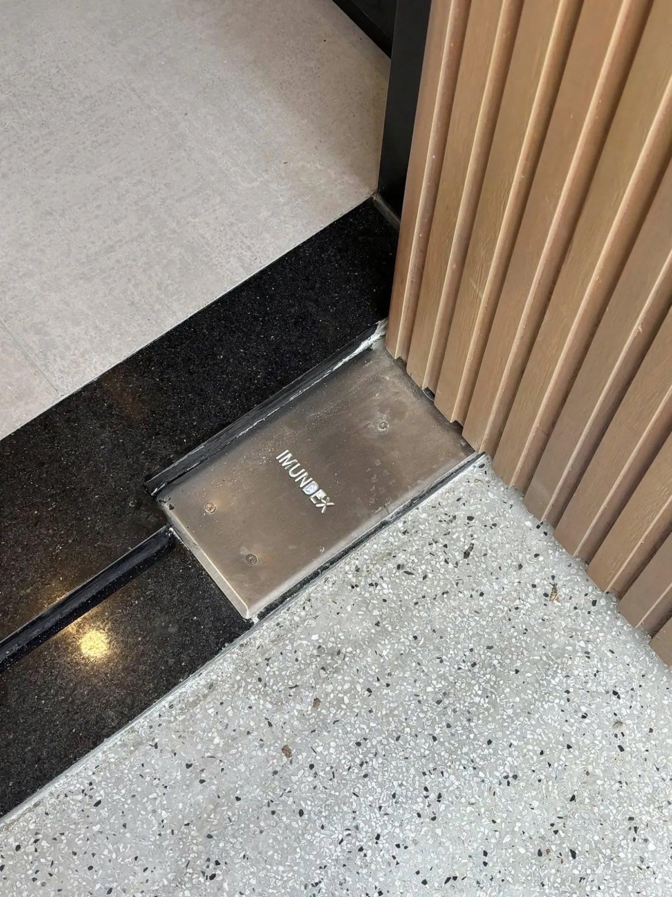

Nói ngắn: với đa số cửa chính gỗ xoay trục, chúng tôi dùng bản lề sàn Imundex 708.16.120 (tải tối đa 120kg) kèm bộ phụ kiện cho cửa gỗ 708.46.030. Cánh nhẹ hơn có thể dùng loại 100kg; cánh rất lớn hoặc gỗ nặng như Lim nên cân nhắc loại 300kg. Chọn theo trọng lượng thực của cánh, không chọn theo cảm tính.
Bản lề sàn là gì, vì sao cửa xoay trục cần nó?
Bản lề sàn là một hộp cơ cấu chôn âm dưới nền, ngay dưới chân cánh cửa. Trục của hộp đỡ toàn bộ trọng lượng cánh và giúp cánh tự đóng lại sau khi mở. Phía trên khung bao chỉ còn một chốt trục nhỏ, nên mặt cửa nhìn từ ngoài vào gần như không lộ phụ kiện, khác hẳn kiểu treo cánh bằng bản lề lá trên khung.
Với cửa chính xoay trục khổ lớn, cánh dày 50–55mm, bản lề lá thường phải gánh lực kéo ngang rất lớn và dễ làm cánh xệ theo thời gian. Bản lề sàn đỡ cánh từ bên dưới nên phù hợp hơn cho kiểu cửa này.
Các mã bản lề sàn Imundex
Imundex là thương hiệu thuộc tập đoàn KD. Feddersen của Đức. Trên website hãng, bản lề sàn có ba mức tải, mỗi mức hai màu nắp:
| Mã | Tải tối đa | Bề mặt nắp | Giá niêm yết* |
|---|---|---|---|
| 708.16.100 | 100kg | Inox mờ | 2.880.000đ |
| 708.16.101 | 100kg | Inox bóng | 2.930.000đ |
| 708.16.120 | 120kg | Inox mờ | 2.880.000đ |
| 708.16.121 | 120kg | Inox bóng | 2.980.000đ |
| 708.16.300 | 300kg | Inox mờ | 8.000.000đ |
| 708.16.301 | 300kg | Inox bóng | 8.100.000đ |
* Giá niêm yết chưa VAT trên imundex.com.vn, xem ngày 21/11/2026; giá có thể thay đổi.
Thông số mã 708.16.120 chúng tôi dùng nhiều nhất
- Tải trọng tối đa: 120kg
- Kích thước tổng thể: 306 × 109 × 40mm
- Chất liệu: thân sắt đúc, nắp che inox 304, bề mặt mờ
- Độ bền: 500.000 vòng đóng mở
- Bảo hành hãng: 2 năm
Đừng quên bộ phụ kiện cho cửa gỗ

Trên website, bản lề sàn Imundex nằm trong nhóm phụ kiện cửa kính. Để lắp cho cánh gỗ, hãng có thêm mã riêng tên phụ kiện cho cửa gỗ, kim loại khi dùng bản lề sàn, lắp kèm bản lề để liên kết cánh gỗ với hộp bản lề.
- 708.46.030: hợp kim kẽm và thép, tải tối đa 300kg, bảo hành 2 năm (giá niêm yết 440.000đ chưa VAT).
- 708.44.012: cùng chất liệu, tải tối đa 120kg (giá niêm yết 430.000đ chưa VAT).
Chúng tôi chọn bộ 708.46.030 cho cửa chính vì tải cao hơn hẳn trọng lượng cánh, để dư sức cho phần chịu lực quan trọng nhất của bộ cửa.
Chọn mức tải nào cho cửa nhà bạn?
- Tính trọng lượng cánh trước. Cánh càng rộng, càng cao, càng dày và gỗ càng nặng thì càng nặng. Cùng một kích thước, cánh gỗ Lim nặng hơn đáng kể so với cánh Teak (xem so sánh gỗ Teak, Lim và Kiền Kiền).
- Chọn mức tải cao hơn trọng lượng cánh, đừng chọn sát giới hạn. Cánh có ô kính, tay nắm kim loại dài hoặc khoá điện tử đều cộng thêm trọng lượng.
- Cánh rất lớn hoặc gỗ nặng: cân nhắc loại 300kg. Ví dụ cửa gỗ Lim phối lam cánh rộng 1m6 như công trình ở Quảng Bình.
- Chọn nắp mờ hay bóng theo nền nhà. Nắp inox mờ ít lộ vết xước và hợp nền đá, terrazzo; nắp bóng hợp không gian sáng bóng, hiện đại.
Lắp đặt: phần quyết định cửa có êm hay không
Hộp bản lề phải được khoét nền đúng vị trí, cân bằng tuyệt đối và đồng trục với chốt trên khung bao. Lệch vài milimet là cánh đóng không khít, cọ sàn hoặc tự mở hé. Vì vậy chúng tôi đo ô cửa thực tế, dựng bản vẽ trước khi xuống xưởng, khoét và lắp thử phụ kiện ngay tại xưởng rồi mới mang ra công trình.
Xem thêm các hãng phụ kiện chúng tôi dùng ở trang Phụ kiện cửa, hoặc các công trình dùng bản lề sàn Imundex: cửa gỗ Kiền Kiền nhà anh Phan Anh, cửa gỗ Kiền Kiền khung bao sơn đen.
Gửi kích thước ô cửa, chúng tôi tính trọng lượng cánh và báo giá trọn bộ kèm phụ kiện.
Nhận báo giá